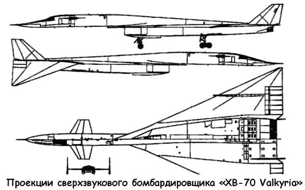
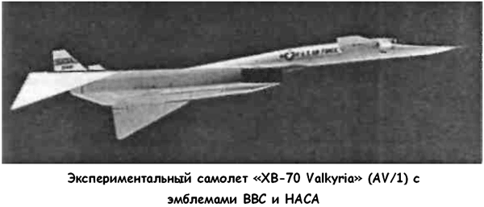

Сверхзвуковой бомбардировщик «ХВ-70 Valkyria»
Другим направлением в развитии средств доставки обычных и ядерных зарядов на территорию противника стало совершенствование турбореактивной авиации. По итогам воздушной войны в Корее западные эксперты сделали вывод, что решающими факторами в борьбе за превосходство в воздухе являются максимальная скорость и оснащение самолета управляемым ракетным оружием. В результате предпринятых американскими конструкторами изысканий на свет появились настоящие летающие монстры — тяжелые сверхзвуковые самолеты, действующие на границе космического пространства.
В октябре 1954 года командование ВВС США выпустило техническое задание на разработку самолета-приемника бомбардировщика «В-52» — сверхзвукового стратегического бомбардировщика (систему оружия «Weapons System 110», «WS-110A»). Был объявлен конкурс предварительных проектов.
Крейсерская скорость нового бомбардировщика намечалась порядка 0,9 Маха, а при проникновении в воздушное пространство противника на расстояние 1600–1850 километров он должен был развивать «максимально возможную скорость на максимально возможной высоте».
В июле 1955 года шесть авиационных компаний представили предварительный проекты, a 11 ноября фирмы «Боинг» («Boeing») и «Норт Америкен» («North American Aviation») получили заказы на проработку своих эскизных проектов, которые были готовы к апрелю следующего года.
Самой трудной проблемой при проектировании перспективного бомбардировщика было одновременное достижение высокой сверхзвуковой скорости и межконтинентальной дальности полета. Для этого требовалось получить высокое сверхзвуковое аэродинамическое качество планера — задача, которая не решена и в наши дни. В 50-х годах трудности усугублялись малой экономичностью имевшихся двигателей, недостаточной изученностью аэродинамики сверхзвуковых скоростей и отсутствием высокопроизводительных ЭВМ для проведения расчетов. В результате оба спроектированных по заданию «WS-110A» самолета имели небывало огромные размеры.
Проектом фирмы «Норт Америкен» предусматривалось создание бомбардировщика массой 340 тонн с треугольным крылом, к которому крепились дополнительные консоли с расположенными посередине огромными топливными баками на 86 тонн топлива каждый. При заходе на цель эти консоли должны были сбрасываться с последующим разгоном самолета до 2,3 Маха. Фактически это было «звено» из трех аппаратов. Необходимая длина взлетно-посадочной полосы превышала используемую для «В-52», что требовало больших затрат на перестройку существующей инфраструктуры.
Оба представленных проекта были отклонены в октябре 1956 года и, после переработки, вновь представлены фирмамиразработчиками через девять месяцев — к июлю 1957 года.
Проектировщики учли требование ВВС уменьшить взлетную массу. Но, главное, они существенно изменили свои проекты под вновь поставленную задачу обеспечения полностью сверхзвукового полета. Согласно новому техническому заданию бомбардировщик должен был иметь дальность до 9600 километров, крейсерскую скорость — 2 Маха с возможностью броска до 3 Махов при заходе на цель. ВВС, формулируя новое техническое задание, опирались на рекомендации ученых из НАКА, которые к тому времени добились крупных успехов в изучении аэродинамики, прочности и силовых установок сверхзвуковых самолетов.
Для уменьшения потребного запаса топлива и размерности самолета фирмы «Боинг» и «Норт Америкен» решили перейти к бороводородному топливу. Предпочтение отдали пентаборану, хотя исследовались также диборан и декаборан.
Пентаборан имеет меньшую плотность по сравнению с керосином и, соответственно, занимает больший объем, но, отличаясь высокой теплотой сгорания («высокой калорийностью», как говорили в то время), позволяет снизить массу топлива дальнего самолета. Проект фирмы «Боинг» был похож на более поздний проект сверхзвукового пассажирского самолета «Боинг-2707» с иглообразной носовой частью, которая отклонялась вниз во время взлета и посадки, с дельтовидным крылом и четырьмя двигателями на пилонах.
Конструкторы фирмы «Норт Америкен» со своей стороны применили ряд компоновочных мер, направленных на повышение аэродинамического совершенства. Первым шагом стала установка цельноповоротного переднего горизонтального оперения, играющего роль дестабилизатора и уменьшающего балансировочное сопротивление самолета на сверхзвуке. Но этого оказалось недостаточно, и конструкторы пошли на риск, использовав новое оригинальное техническое решение. Идея состояла в повышении подъемной силы за счет сжатия воздушного потока. Она была предварительно опробована в ходе экспериментальных исследований НАКА «Compression Lift», проходивших в 1955–1956 годах, а в проекте фирмы «Норт Америкен» — успешно реализована путем размещения двигателей в единой подкрыльевой гондоле с применением плоского воздухозаборника, имеющего выдвинутый вперед неподвижный клин. Создаваемая на сверхзвуке система косых скачков уплотнения приводила к образованию области повышенного давления под крылом.
Еще одним новшеством стали концевые части крыла, отклоняемые вниз. Главным их предназначением было повышение устойчивости самолета на больших скоростях. Дело в том, что отклонение концов крыла приводило к перемещению аэродинамического фокуса самолета вперед благодаря уменьшению площади крыла вблизи задней кромки и дополнительному снижению балансировочного сопротивления в сверхзвуковом полете. Кроме того, отклонение концевых частей давало увеличение подъемной силы от сжатия потока, так как скачки уплотнения, создававшиеся клином воздухозаборника, отражались от отклоненных законцовок, что еще более повышало давление под крылом. Все это заметно увеличивало аэродинамическое совершенство самолета.


В то же время поворотные законцовки крыла нового бомбардировщика существенно снижали безопасность полета: при их заклинивании в полностью отклоненном положении самолет не мог совершить безопасную посадку и экипаж должен был катапультироваться. 23 декабря 1957 года фирма «Норт Америкен» была объявлена победителем конкурса проектов и получила контракт на разработку самолета, которому в феврале следующего года дали обозначение «Икс-Би-70» («ХВ-70»), а в июле — название «Валькирия» («Valkyrie»). Название это было выбрано командованием в результате конкурса имен, на который летчики и авиаторы всего мира предложили более 20 тысяч вариантов. Название «Валькирия» (дева из скандинавской мифологии, забирающая души павших воинов в иной мир) предложил фотодешифровальщик из Разведывательного управления сержант Фрэнк Сейлер. Ему был присужден приз в размере 500 долларов и трехдневная путевка в Голливуд.
В выборе военными проекта «Норт Америкен» сыграло свою роль желание ВВС поддержать эту фирму, портфель заказов которой к тому времени оскудел, так как работы по программе «Навахо» прекратились и финансовое положение фирмы было не в пример хуже, чем у «Боинга». Предусматривалась постройка 62 самолетов, из них 12 опытных и строевых для формирования первого авиакрыла. Первый полет опытного самолета намечался на январь 1962 года, первое авиакрыло планировалось сформировать к августу 1965 года.
Самолет рождался в мучительных спорах между заказчиком, фирмой-изготовителем и Конгрессом США. Одни считали, что межконтинентальные ракеты эффективней громоздкого и уязвимого самолета. По мнению других, скорость и высота полета «Валькирии» слишком велики, чтобы она могла точно бросить бомбы. Третьи считали, что машина морально устареет еще до того, как конструкторы справятся с массой чисто технических проблем. Но, главное, появление в СССР первых дальних мобильных зенитных ракетных комплексов «С-75» заставило сделать вывод, что по уязвимости «Валькирия» будет ненамного лучше дозвукового «В-52».
Первый серьезный удар по программе пришелся на декабрь 1959 года, когда была прекращена разработка «Валькирии» как системы оружия. Новыми планами предусматривалась постройка одного экспериментального самолета без навигационно-бомбардировочной системы и системы вооружения.
ВВС США все же не теряли надежды довести paботы по бомбардировщику до серийного производства и в октябре 1960 года добились восстановления программы в прежнем статусе. Однако в апреле 1961 года, после прихода к власти президента Кеннеди, программа была вновь сокращена до постройки трех экспериментальных машин, в том числе двух «ХВ-70А» («ХВ-70А») без боевых систем и с экипажем из двух человек, а также одного «Икс-Би-70Б» («ХВ-70В») с навигационной системой, вооружением и экипажем из четырех человек.
В этот период было предложено три пассажирских варианта бомбардировщика (от минимально модифицированного варианта до глубокой модификации), проводились исследования варианта бомбардировщика «В-70» с ядерной силовой установкой.
В 1960 году рассматривалась возможность применения «Валькирии» в качестве сохраняемой первой ступени аэрокосмической системы и, в частности, для ракетоплана «Дайна-Сор» («Х-20 Dyna-Soar» или «Dynasoar»), но и этот проект был отклонен.
В 1962 году изучалась возможность создания разведчика-бомбардировщика «РС-70» («RS-70»), однако решение было принято в пользу проекта фирмы «Локхид».
Наконец, в марте 1964 года произошло последнее сокращение программы — до двух двухместных экспериментальных самолетов «ХВ-70А» без боевых систем.
После того как «Валькирию» переклассифицировали в экспериментальную машину, в ее бомбоотсеке расположили аппаратуру системы управления воздухозаборником массой 2 тонны и аналого-цифровую записывающую аппаратуру массой 2,7 тонны, способную регистрировать до 1050 параметров.
Первый полет экспериментального самолета «АВ/1» («AV/1» или «ХВ-70/01») состоялся 21 сентября 1964 года — почти через 10 лет после начала разработок. «АВ/2» («AV/2» или «ХВ-70/02») взлетел 7 июля 65-го. 14 октября того же года в 17-м испытательном полете на высоте 21335 метров бомбардировщик достиг расчетной скорости, в 3 раза превысившей звуковую. А 19 мая 1966 года полет «Валькирии» со скоростью в 3 Маха на высоте около 21 километра длился уже 32 минуты, принеся фирме «Норт Америкен» 275 тысяч долларов — вознаграждение, предусмотренное контрактом с ВВС.
Сверхзвуковой бомбардировщик «Валькирия» был гигантским самолетом. Его максимальная взлетная масса достигала 244 тонн. Емкость 11 внутренних баков-отсеков составляла 178000 литров. Самолет был снабжен шестью турбореактивными двигателями «YJ 93-QF3» фирмы «Дженерал электрик». Для самолета было разработано специальное топливо JP-6 с более низким давлением паров, повышенной термической стабильностью и меньшим осадкообразованием.
«Валькирия» представляла собой самолет по схеме утка с треугольным крылом со стреловидностью по передней кромке 65,6°. Использование закрылков переднего горизонтального оперения парировало момент тангажа, возникающий при взлетно-посадочном зависании элевонов, что давало возможность использовать самолет с существующих аэродромов. Одним из недостатков аэродинамики «Валькирии» был срыв потока с переднего горизонтального оперения даже при отклонении расположенных на нем закрылков, что приводило к довольно сильной тряске самолета на малых скоростях.
Во время испытаний конструкторы столкнулись с проблемой отслоения верхних листов слоистых панелей обшивки в результате производственных дефектов и аэродинамического нагрева конструкции в полете. В нескольких летных происшествиях воздушный поток отодрал от самолета и унес значительные по размерам участки листов.
Немало хлопот испытателям доставила силовая установка.
В полете неоднократно нарушалась расчетная работа воздухозаборника из-за образования выбитой ударной волны на входе. Особенно неблагоприятные последствия наступали при выходе на максимальную скорость: резко падала тяга, возникали грохот и тряска, самолет совершал непроизвольные движения по крену, тангажу и рысканию. Одной из крупных эксплуатационных проблем с двигателями были их частые повреждения посторонними проедметами (заклепками, птицами, льдом из дренажных каналов). Титановые лопатки, использованные в компрессоре, имели значительно большую повреждаемость по сравнению со стальными. По этой причине только за неполные два года испытаний потребовалось 25 раз снимать двигатели с самолета для ремонта.
Имели место и неприятности с шасси — в частности, отмечался неразворот тележек основных стоек. На стенде сложная кинематика работала без сбоев, но в полете, после длительного пребывания на сверхзвуке, тележки шасси вышли из отсеков, но в горизонтальное положение не развернулись.
После уборки и повторного выпуска шасси тележки все же заняли штатное положение. Причиной этого происшествия оказалось термическое расширение тяг и качалок кинематики основных стоек.
Были также случаи нераскрутки колес на посадке из-за несовершенства тормозной системы, которая блокировала колеса. В ходе одной из таких посадок левая тележка шасси воспламенилась от трения об полосу, а обода двух колес сточились более чем на треть. Ресурс основных тормозных колес составлял вначале 3–4 посадки, затем он был доведен до 5-10 посадок.
Кроме прочего, самолет «Валькирия» был первой крупной сверхзвуковой машиной аэроупругой конструкции. Его большие размеры, применение тонкого треугольного крыла и длинного гибкого фюзеляжа обусловили необходимость масштабных расчетов на аэроупругость. Эти расчеты выполнялись с применением новейшего по тому времени инструментария — цифровых и аналоговых ЭВМ, но все же не дали хороших характеристик самолета при полете в турбулентной атмосфере. Поэтому важной экспериментальной работой стали исследования системы «GASDSAS», предназначенной для парирования нагрузок от воздушных порывов и подавления аэроупругих колебаний конструкции. Эта программа являлась продолжением работы, проводившейся ВВС совместно с НАСА на самолетах «В-52» (системы «SAS» и «LAMS»). Система «GASDSAS» предусматривала отклонение элевонов по тангажу и крену, а также рулей направления по сигналам датчиков перегрузок. Исследования показали, что для уменьшения интенсивности изгибных колебаний фюзеляжа целесообразно использовать небольшие горизонтальные и вертикальные поверхности, расположенные по схеме «утка». В дальнейшем подобная система была применена на стратегическом бомбардировщике «В-1».
Летные исследования с участием НАСА проводились также в области аэродинамики (флаттер панелей обшивки, сопротивление трения обшивки, донное сопротивление фюзеляжа и так далее), конструкции (аэродинамический нагрев, полетные нагрузки) и эксплуатации (шум на местности).
Пилотажные характеристики самолета оценивались летчиками как «очень хорошие» в полете на малых и больших скоростях; особенно отмечалась легкость и мягкость посадки — как у пассажирских самолетов. Большое треугольное крыло создавало у земли воздушную подушку, увеличивавшую подъемную силу. В результате вертикальная скорость в момент приземления составляла всего 0,3–1,2 м/с. 8 июня 1966 года экспериментальный самолет «AV/2» разбился, столкнувшись в воздухе с истребителем «F-104 Старфайер».
Эта случайная трагедия, приведшая к потере многомиллионного самолета, получила широкий резонанс в американской печати. Она произошла в полете, организованном по заказу фирмы «Дженерал Электрик» для рекламной съемки самолетов, на которых установлены двигатели ее разработки.
С фотосъемщика планировалось запечатлеть полет строем «клин» из пяти самолетов. Полет управлялся с командного пункта авиабазы Эдвардс. Съемки практически уже завершились, когда «Старфайтер», летевший справа от «Валькирии», ударился левым концевым крыльевым баком об отклоненную правую концевую часть ее крыла. Повредив свое левое полукрыло, «Старфайтер» резко наклонился влево и, перевернувшись, скользнул над хвостом «Валькирии», срезав часть ее правого киля и почти полностью снеся левый киль.
Своим носом «Старфайтер» также ударил сверху по левой консоли «Валькирии». Сразу после этого «Старфайтер» взорвался из-за того, что топливо, хлынувшее из его разрушенного бака, мгновенно воспламенилось от выхлопных газов «Валькирии». Летчик Джозеф Уокер погиб.
«Валькирия» продолжала лететь прямо еще 10–15 секунд, после чего накренилась вправо, опустила нос и вошла в интенсивное движение по рысканию. Часть ее левой консоли отлетела из-за чрезмерной перегрузки, а затем самолет попал в плоский штопор. Первый летчик Элвин Уайт, шеф-пилот фирмы «Норт Америкен», благополучно приземлился, так как вовремя привел в действие систему спасения; второй летчик Карл Кросс погиб.
Потеря «AV/2» стала сильнейшим ударом по программе скоростных испытаний, так как этот образец самолета был оборудован автоматической системой управления воздухозаборником, и летчики предпочитали выходить на максимально возможную скорость именно на нем.
Испытания оставшегося самолета продолжались еще два с половиной года. 4 февраля 1969 года «Валькирия» взлетела в последний раз, чтобы приземлиться на авиабазе Райт-Паттерсон и стать экспонатом музея ВВС.
Несмотря на исследовательскую направленность работ по «Валькирии», сохранялась возможность переделки самолета в бомбардировщик, и в Советском Союзе испытания «Валькирии» рассматривались как реальная угроза. Даже в конце 60-х годов эта машина в нашей стране считалась не экспериментальной, а боевой.
Об объемах работ по созданию суперсамолета убедительнее всего говорит статистика: в программе приняли участие более 20 тысяч предприятий и организаций (из них только крылом занимались около 8000!); всего было затрачено 14,5 миллиона человеко-часов, стоимость программы достигла 1,3 миллиарда долларов.
Несмотря на колоссальные затраты, правительство США аннулировало всю программу по «Валькирии», передав заказ на перспективный бомбардировщик «Б-1» («В-1») фирме «Рокуэлл Интернэйшнл» («Rockwell International»).